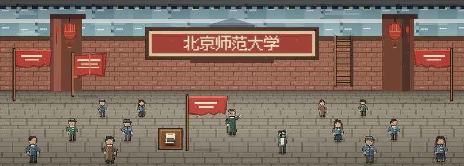

推荐从这里开始
把新的名字，挂在门前。
1949 · 新校牌 约 1—2 分钟
从一间教室、一块校牌开始，走进师大的记忆。

1949 · 新校牌 约 1—2 分钟
当前沿用现有校史情境；内容来源仍待逐幕审校。
有人记得一盏灯，有人记得散场后的操场。
一张书桌，一枚木铎，慢慢住进你喜欢的记忆。
点击台灯开关灯，点击书架查看记忆。布置时可点选家具后再点空位。
只保存在当前浏览器，可以从设置导出备份。
保存家园、记忆、设置与引导状态。不需要账号；换设备不会自动同步。
Demo 不会修改 V1 的游戏存档。
当前没有云端账号或公开投稿服务。
你在哪个地方停住了，或者希望这里多些什么？
把导出的JSON文件发给测试负责人即可；此文件不包含你的故事草稿和家园备份。
这里先保存一份草稿。公开投稿与图片转场景将在后续版本提供。
先走进一段校史，再读一页他人的校园片段。喜欢的故事，会慢慢住进你的家园。
先选校园，再选一个地点。也可以不定位，直接写故事。